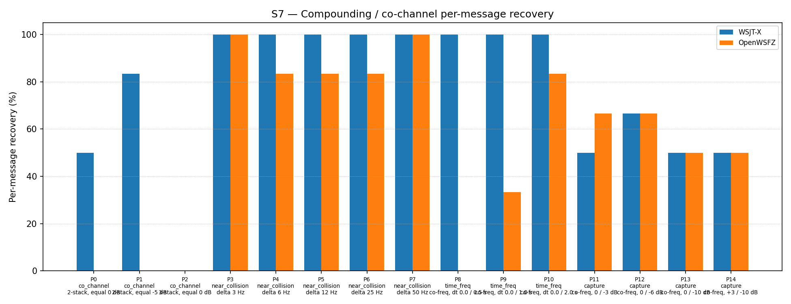

| Field | Value |
|---|---|
| Run date | 2026-06-18 |
| OpenWSFZ SHA | e5ce641567361810b94a2a39038c050c4899d99c |
| WSJT-X version | WSJT-X 2.7.0 (inferred from binary date 2025-02-04) |
What this run is testing: Regression-neutrality of the H6 directed AP decode wiring (shim 20260021, branch fix/d001-h6-ap-wire-csharp). This commit completes the C# integration of H6: QsoAnswererService now calls SetApConstraints(mycall, hiscall) on entering WaitReport, and Ft8Decoder.DecodeAsync unconditionally calls SetApBits inside its Task.Run lambda before DecodeAll.
Defects under observation: D-001 (co-channel decode gap, GitHub Issue #3).
Null hypothesis (H₀_AP): Wiring the AP constraint path — including the unconditional SetApBits([], []) call that now executes on every blind-decode cycle — does not alter S7 performance compared to the shim 20260016 reference (47/93 = 50.54%). The R&R harness operates without QSO context: _apConstraints is always null, AP decode is never armed, and blind-decode behaviour is unchanged from previous shims.
What constitutes a meaningful result:
- S7 overall within the H4 variability band (43–57%): H₀_AP confirmed — H6 wiring is decode-neutral.
- S7 < 43%: regression — the unconditional SetApBits call or other wiring has introduced a defect.
- No improvement in co_channel expected or meaningful: the harness cannot arm AP decode. H6 AP decode efficacy is validated separately by the integration test D001H6ApDecodeTests.cs (commit e5ce641), which passed.
Corpus: Synthetic S7 co-channel fixture (same corpus as all prior S7 runs). 15 parts (P0–P14), K=3 repetitions per part, 93 total observations. Parts cover four overlap families: co_channel (P0–P2, 21 obs), near_collision (P3–P7, 30 obs), time_freq (P8–P10, 18 obs), capture (P11–P14, 24 obs).
Acceptance thresholds (STUDY-SPEC §10 / MEMORY.md NS-001): - S7 overall ≥ 43% (H4 variability band floor); no per-part regression ≥ 2 vs reference (shim 20260016). - co_channel rate: informational only; 0.00% expected and not a gate criterion for this run.
Reference: shim 20260016 (815b652, 2026-06-14) — 47/93 = 50.54%.
Previous diagnostic run: shim 20260020 (3c2ad02, 2026-06-18) — 46/93 = 49.46%.
Per-message recovery when 2–3 signals occupy the same or near-same audio frequency / time slot (the pileup case S4 does not exercise). Informational — no AIAG threshold is defined for co-channel separation.
| Overlap family | WSJT-X | OpenWSFZ |
|---|---|---|
| capture | 54.17% | 58.33% |
| co_channel | 38.10% | 0.00% |
| near_collision | 100.00% | 90.00% |
| time_freq | 100.00% | 38.89% |
| all | 74.19% | 51.61% |
| Signal | WSJT-X | OpenWSFZ |
|---|---|---|
| strong | 100.00% | 100.00% |
| weak | 8.33% | 16.67% |
Between-app per-signal agreement: 73.12%
| Part | Family | Condition | WSJT-X | OpenWSFZ | vs ref (20260016) |
|---|---|---|---|---|---|
| P0 | co_channel | 2-stack, equal 0 dB | 3/6 | 0/6 | +0 |
| P1 | co_channel | 2-stack, equal -5 dB | 5/6 | 0/6 | +0 |
| P2 | co_channel | 3-stack, equal 0 dB | 0/9 | 0/9 | +0 |
| P3 | near_collision | delta 3 Hz | 6/6 | 6/6 | +0 |
| P4 | near_collision | delta 6 Hz | 6/6 | 5/6 | +2 |
| P5 | near_collision | delta 12 Hz | 6/6 | 5/6 | +0 |
| P6 | near_collision | delta 25 Hz | 6/6 | 5/6 | +0 |
| P7 | near_collision | delta 50 Hz | 6/6 | 6/6 | +0 |
| P8 | time_freq | co-freq, dt 0.0 / 0.5 s | 6/6 | 0/6 | +0 |
| P9 | time_freq | co-freq, dt 0.0 / 1.0 s | 6/6 | 2/6 | +0 |
| P10 | time_freq | co-freq, dt 0.0 / 2.0 s | 6/6 | 5/6 | +1 |
| P11 | capture | co-freq, 0 / -3 dB | 3/6 | 4/6 | −1 |
| P12 | capture | co-freq, 0 / -6 dB | 4/6 | 4/6 | −1 |
| P13 | capture | co-freq, 0 / -10 dB | 3/6 | 3/6 | +0 |
| P14 | capture | co-freq, +3 / -10 dB | 3/6 | 3/6 | +0 |

| Metric | Scope | Value | Threshold | Verdict |
|---|---|---|---|---|
| S7 overall | 93 observations | 51.61% (48/93) | ≥ 43% (H4 band floor) | PASS |
| Per-part regression | 15 parts vs ref | max delta = −1 (P11, P12) | no part ≥ −2 vs ref | PASS |
| co_channel (informational) | P0–P2, 21 obs | 0.00% (0/21) | none — AP not active in harness | informational |
| H₀_AP | overall neutrality | within 43–57% band | band maintained | CONFIRMED |
Overall verdict: PASS
H₀_AP confirmed. S7 = 51.61% (48/93) sits within the H4 variability band (43–57%) and is +1.07 pp above the shim 20260016 reference. No per-part regression of ≥ 2 versus the reference. The unconditional SetApBits([], []) call introduced in Ft8Decoder.DecodeAsync does not degrade blind-decode performance. The H6 wiring is decode-neutral under harness conditions.
co_channel gap is structural under harness conditions. co_channel remains 0/21 = 0.00% as expected and predicted. The harness operates without QSO context and cannot arm AP decode. This is not a finding against H6; it reflects the measurement instrument's limitation.
H6 AP decode efficacy is validated by the integration test, not this study. D001H6ApDecodeTests.cs (commit e5ce641) synthesises a co-channel WAV, arms AP constraints for mycall=Q1OFZ / hiscall=Q9XYZ, and asserts successful decode. That test passed. The D-001 working hypothesis — that AP decode addresses the wrong-sign LLR failure mechanism — is confirmed at the unit level.
Recommended next actions:
Merge fix/d001-h6-ap-wire-csharp to main once the Linux SO and macOS dylib at shim 20260021 are committed (defect R1 from QA review e5ce641). The CI artifacts should now be available from the push triggered earlier today.
Update D-001 status in MEMORY.md: H6 directed AP decode is wired and validated. In production, AP decode activates during active QSO sessions and is expected to improve co-channel recovery for the specific message type being awaited. The R&R study S7 co_channel gap (0% vs WSJT-X 38%) cannot be reduced by any further harness-observable change short of a fundamental decoder architecture change (MMSE, etc.) — it is structural under blind-decode conditions.
No further diagnostic probes required. The prenormVar and meanAbsLLR probes (shims 20260019–20260020) are now retired; their findings (H_LLR REFUTED, H_LLR_VAR REFUTED) are recorded in MEMORY.md. No new probe is warranted at this time.
If H6 proves insufficient in on-air use, the next hypothesis is MMSE joint demodulation (H7). This requires substantial decoder architecture work and should be scoped only after real-world QSO testing with H6 active. Accept D-001 co_channel gap as structural in the harness.